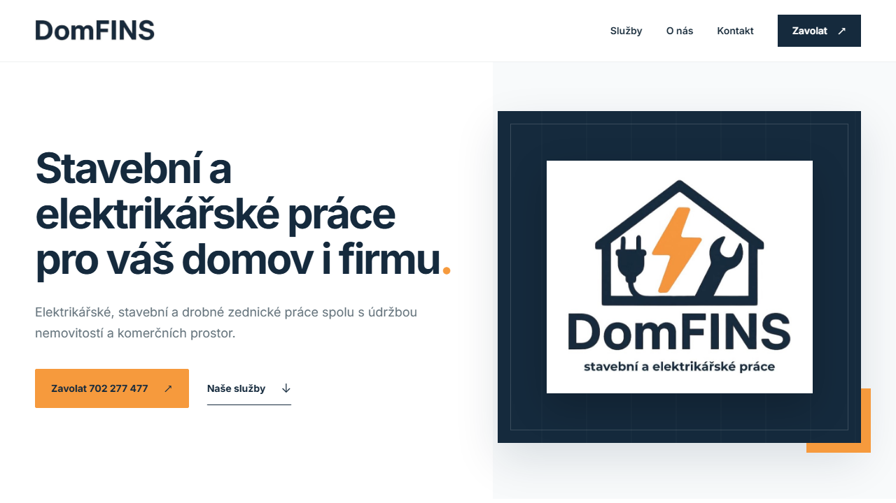
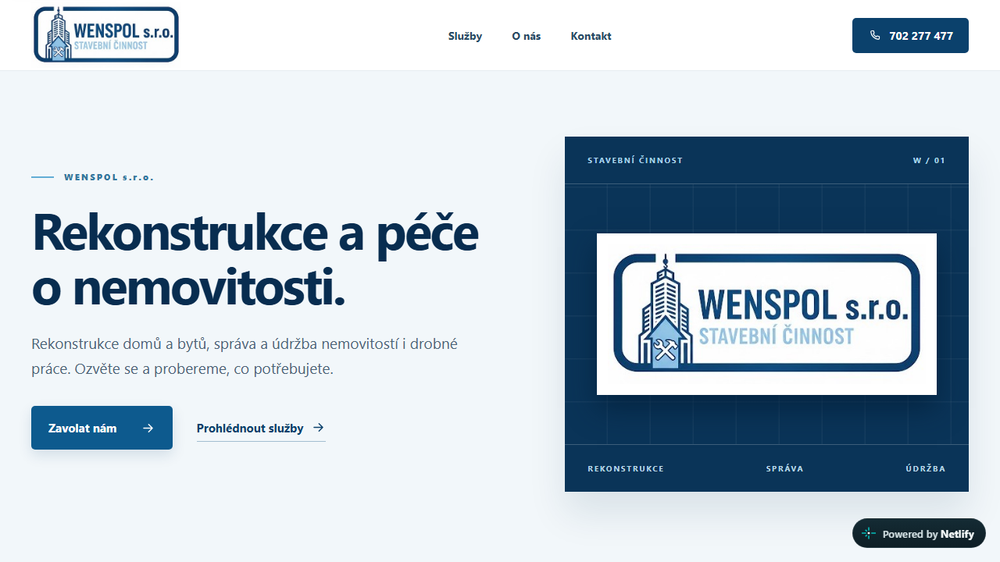

Weby a aplikace, které fungují.
Navrhujeme weby, stavíme aplikace, automatizujeme práci a pomáháme s IT.

Práce a ukázky
Projekty, které můžete otevřít.
Klubový web a dva nezávazné koncepty pro firmy.
 Klubový webBaník Rynholec
Klubový webBaník Rynholec

Nezávazný konceptDomFINS
Nezávazný konceptWENSPOL s.r.o.Živá dema šablon
Automatizace v praxi
Méně rutiny. Více hotovo.
Dvě interaktivní ukázky na smyšlených datech. Otevřete a vyzkoušejte.
Jednoduše od prvního kontaktu
- Probereme zadání
- Navrhneme řešení
- Postavíme a spustíme
Kontakt
Máte projekt? Pojďme ho probrat.
Napište pár vět. Ozveme se s konkrétním dalším krokem.
contact.cingytech@pm.me